Case study 01 · Research → Product
Go together, grow together.
A campus companion app and device that helps freshers discover activities, find someone to go with, and grow confidence along the way.
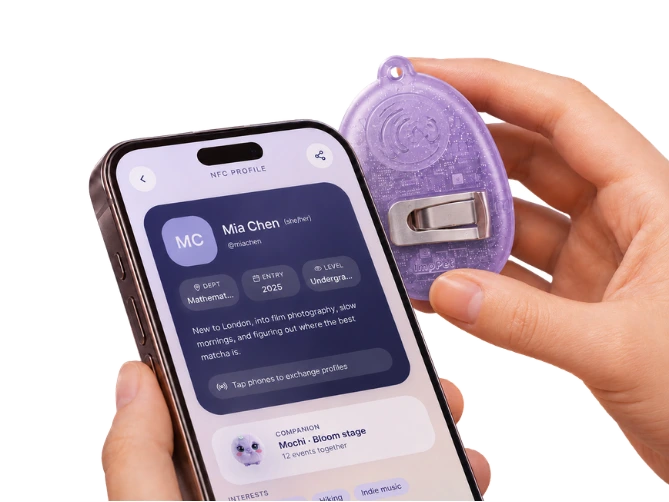
The challenge
How might we support freshers through the social transition into university life in a simple, engaging and low-pressure way?
At Imperial, first-year students, especially international freshers, arrive in a fast-moving environment. There are plenty of activities, but joining them and turning brief encounters into belonging can still feel hard.
Research
Moments of Loneliness in ImperialOur research phase framed loneliness on campus as an everyday design challenge. We looked at how first-year international students move between study spaces, halls and societies, and at the transitional moments in between, using a survey, in-depth interviews, diaries, on-campus observation, personas and journey maps.
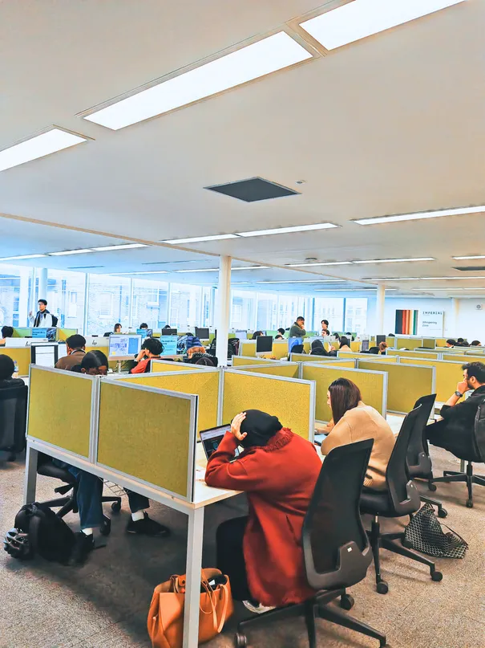
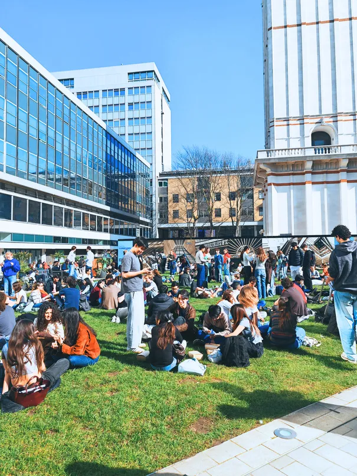
- My role
- I co-designed and ran our survey with one teammate, which gathered 57 responses from students across Imperial. Alongside the rest of the team I carried out interviews, nine in total, and we then synthesised the survey, interview and diary findings together to see where loneliness actually shows up in student life.
Insight
“Sometimes I want to join an activity, but I don’t know who to go with.”Research participant
- Campus opportunities feel hard to enter.Imperial has many activities, but freshers often lack clear entry points, familiar companions or the confidence to join groups that already exist.
- Starting a connection feels high-stakes.Messaging or approaching someone can feel intrusive or risky. Shared activities give people a natural reason to interact.
- Taking part doesn’t guarantee belonging.Students meet people in Freshers’ Week and still feel disconnected. What matters is whether brief encounters continue.
These insights led us to reframe the brief: from reducing loneliness to supporting freshers’ social transition into university life.
- My role
- The insights came out of team discussion as we compared what we had heard and seen. Working through them together is also how we arrived at the reframe: from reducing loneliness to supporting the social transition into university.
Concept
Our first direction matched students by location through NFC checkpoints around campus. Testing raised privacy concerns and showed it depended too much on where people happened to be. We pivoted to a personal companion: an app for discovering activities and finding someone to go with, paired with a small device that carries a digital pet. The pet hatches and grows as the student explores campus and makes friends.
- My role
- I proposed the ImpPets idea and led the concept: pairing an activity app with a Tamagotchi-inspired device, so that every event a student joins and every friend they make visibly helps their pet grow. It turned a vague goal of “feeling less lonely” into small, rewarding steps.
Prototype
We prototyped hardware and software in parallel and tested with users at every stage.
-
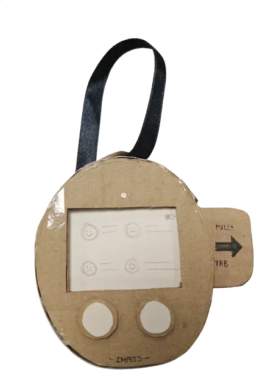
Lo-fi: form
Three cardboard forms tested in co-design sessions with 7 peers and a survey of 30. 91.3% preferred the egg shape, 65.2% palm size and 60.9% a pin attachment.
-
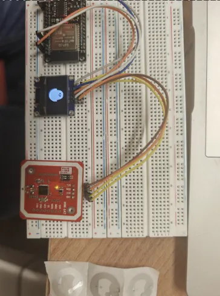
Hi-fi: works-like
An ESP32 with a 0.96" OLED and a PN532 NFC reader. The pet on screen evolves with the number of contacts tapped, in sync with the app’s social points.
-
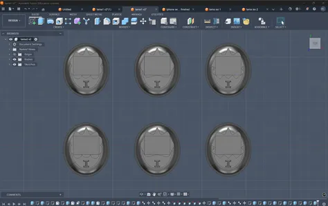
Hi-fi: looks-like
Shell modelled in CAD, 3D printed in PLA and painted. The app was built in Lovable and tested with think-aloud sessions and cognitive walkthroughs.
- My role
- The prototypes were a shared effort. I built them together with my teammates, from cardboard form studies and the ESP32 works-like build to the 3D-printed shell and the app, testing each round with users before moving on.
Design
Every student starts with a mystery egg. Attending activities and tapping devices with new friends earns social points, and the pet hatches and grows through Freshers’ season. The translucent shell and soft lilac palette carry through from the device to the app and the brand.
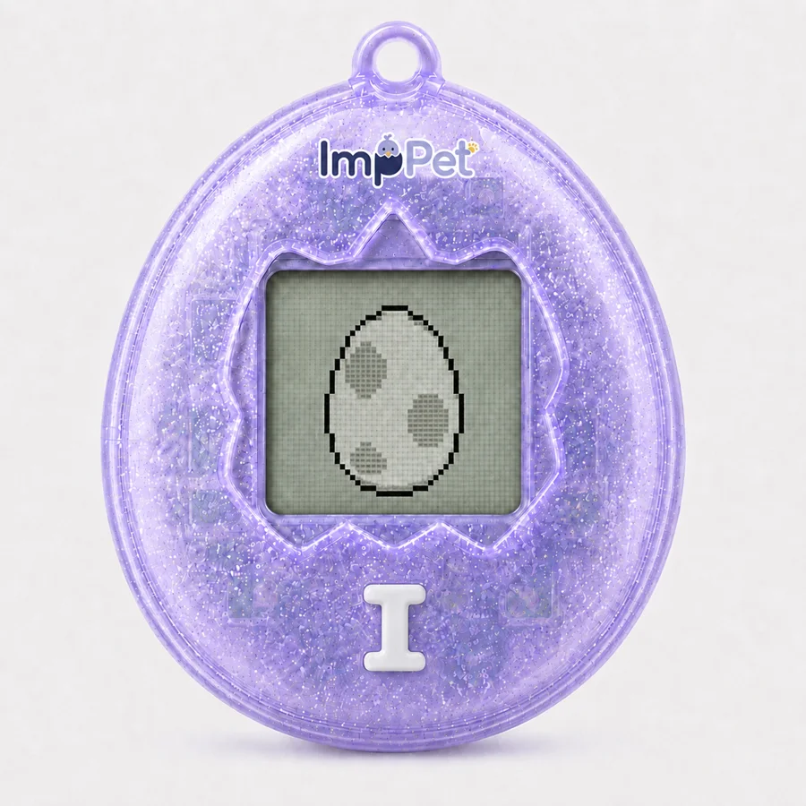
01 Mystery egg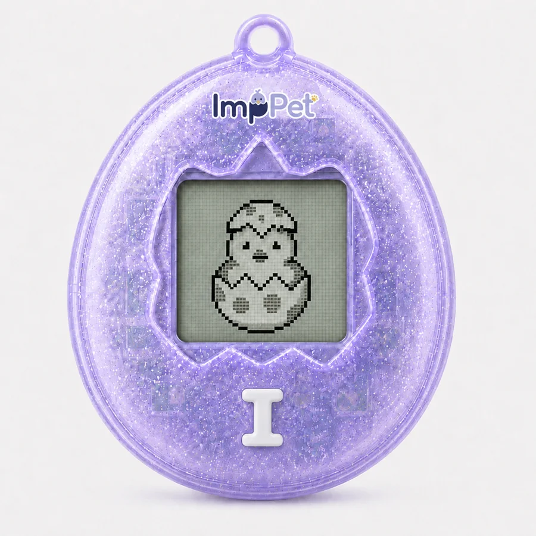
02 Hatching with social points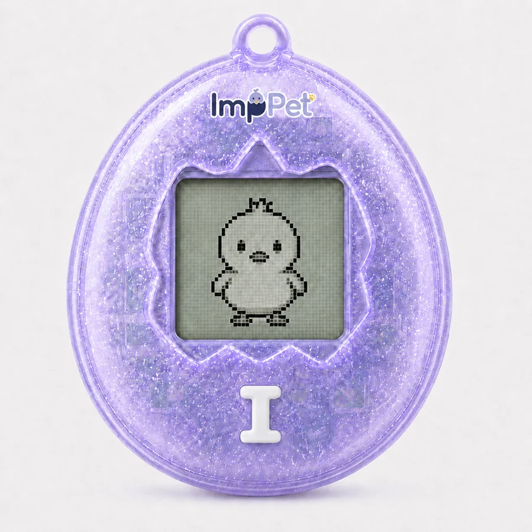
03 Grown up by end of Freshers’
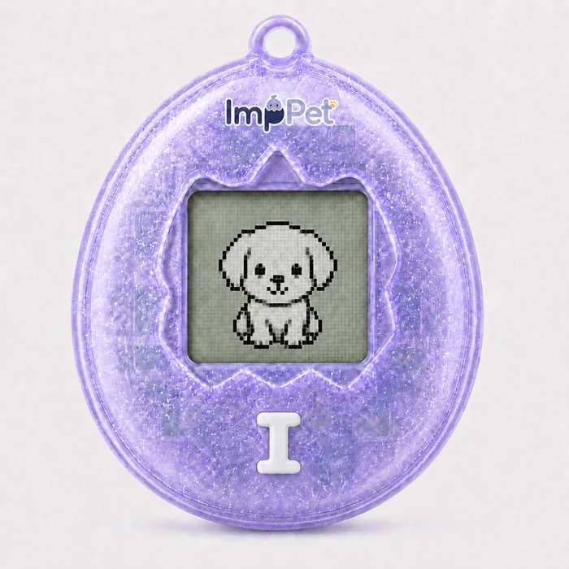
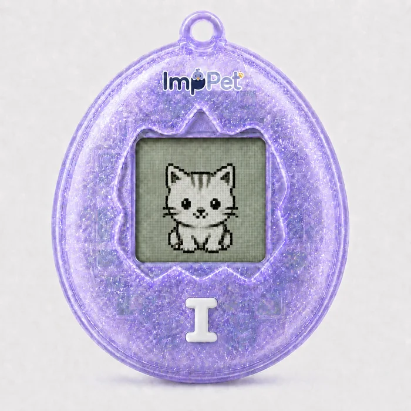
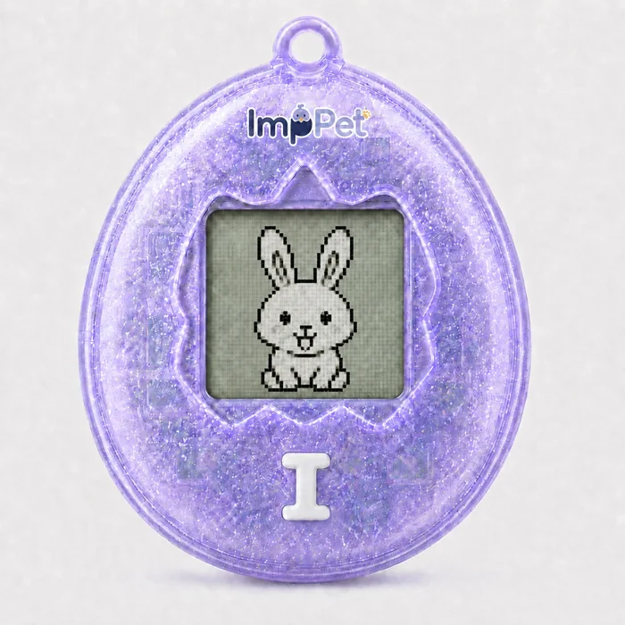
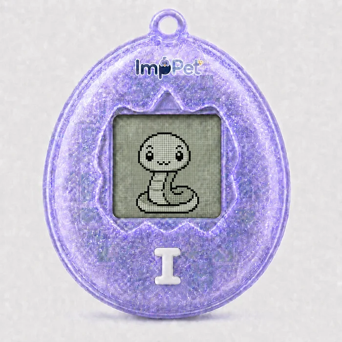
- Navy
#1A2855 - Lilac
#A2A0DB - Yolk
#F5BC44
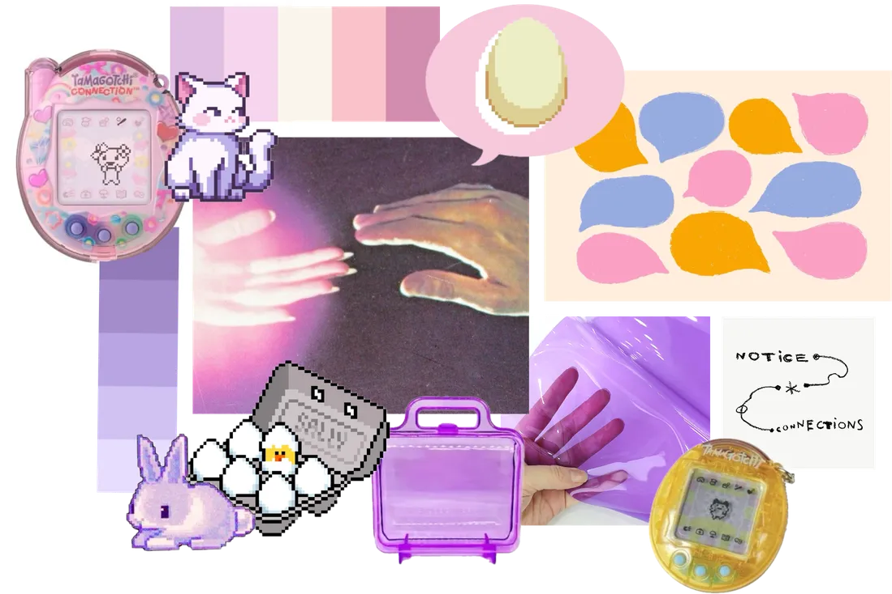
- My role
- I led the visual and interaction design across the project: the device’s egg-shaped form and translucent shell, the app’s UI and user flows, the ImpPets brand identity including the logo and colour palette, the product renders, and the layout of our report and exhibition boards. Keeping one visual language across hardware, software and brand made ImpPets feel like a single product.
Outcome
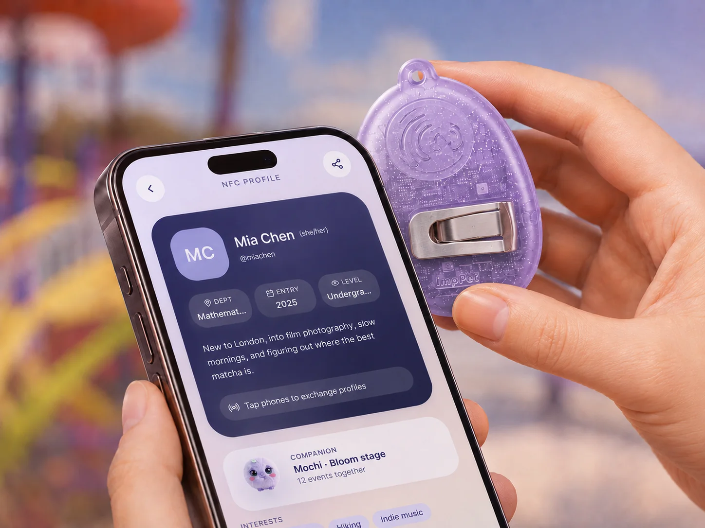
Users were drawn to the hatching mechanic: they could see the egg changing without knowing what would appear. The social points system gave them small, low-effort reasons to keep exploring.
Limitation: testing ran over a short period, so long-term engagement is still unproven. A longer study across a full Freshers’ season would be the next step.